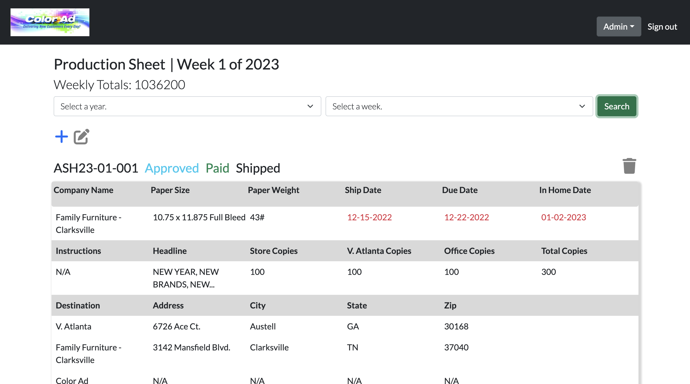
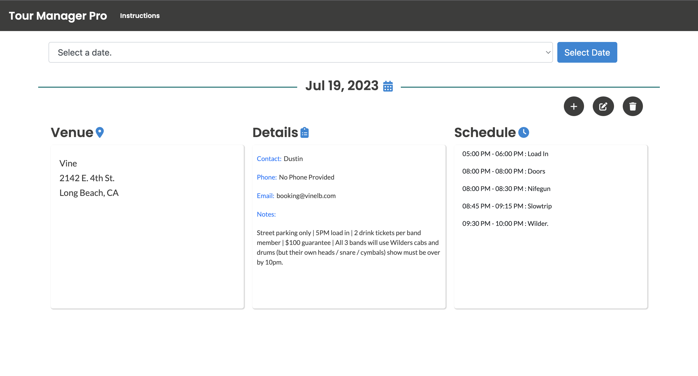
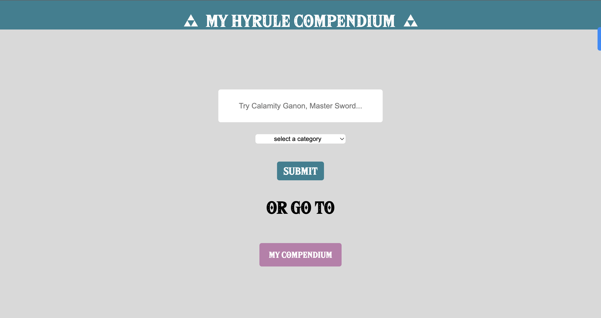

Hello, I'm Nick!
I'm an Information Technology professional from Long Beach, CA with a combined total of 9 years experience in I.T. and Full Stack Web Development.
I am passionate about the user experience, and it drives almost every decision I make whether I'm building software or implementing processes across organizations.
Outside of work, I'm an active musician 🥁 and a cat dad 🐈
Experience
-
March 2023-August 2023
Web Developer - Color Ad
- Built a full-stack internal web application using the PERN stack (PostgreSQL, Express.js, React.js, Node.js) to streamline production workflows.
- Developed and refined front-end user interfaces to improve usability and operational efficiency.
- Collaborated with leadership and cross-functional teams to gather requirements and implement requested features.
- Communicated technical concepts and development progress clearly to non-technical stakeholders.
React.JS
Node.JS
PostgreSQL
Express.JS
JavaScript
HTML5
CSS3
-
January 2024-September 2025
Information Technology Coordinator - ICAN California Abilities Network
- Served as the sole IT support specialist for over 250 employees, resolving software, hardware, and network-related issues.
- Designed and implemented an automated IT ticketing system integrating Slack Workflows with Jira Service Management.
- Trained staff on effective use of technology platforms and digital tools, improving organization-wide efficiency.
- Taught coding, web development, and digital literacy skills to adults with disabilities through personalized instruction.
Mosyle MDM
Apple Business Manager
Slack API's
Slack Workflow Builder
Jira
-
August 2017 - Present
Specialist / Technical Specialist - Apple, Inc.
- Delivered advanced hardware and software troubleshooting support in a fast-paced technical environment.
- Diagnosed and resolved customer issues involving macOS, iOS, device synchronization, networking, and account management.
- Documented technical cases accurately and collaborated with internal Apple teams to support issue resolution.
- Developed strong communication skills by translating technical information into accessible, customer-friendly guidance.
- Maintained high performance in multitasking, problem-solving, and customer experience under pressure.
iOS
MacOS
iPadOS
watchOS
Websites
-

Wilder.
A simple landing page for Rude Records recording artist Wilder.
JavaScript
HTML5
CSS3
Bootstrap5
Vercel
-

'92
A custom website for Rude Records recording artist '92
JavaScript
HTML5
CSS3
Bootstrap5
Vercel
Projects
-

Production Sheet
A full stack solution for a local busniness.
React.JS
JavaScript
HTML5
CSS3
Bootstrap5
Node.JS
Express.JS
PostgreSQL
AWS
Dokku
-

Tour Manager Pro
A full stack web application for professional artists and tour managers who want to keep track of touring artist data.
React.JS
JavaScript
HTML5
CSS3
Bootstrap5
Node.JS
Express.JS
PostgreSQL
AWS
Dokku
-

My Hyrule Compendium
A web application for fans of The Legend Of Zelda: Breath of the Wild who want to interact with a vast database of in-game data.
JavaScript
HTML5
CSS3
AJAX
XML